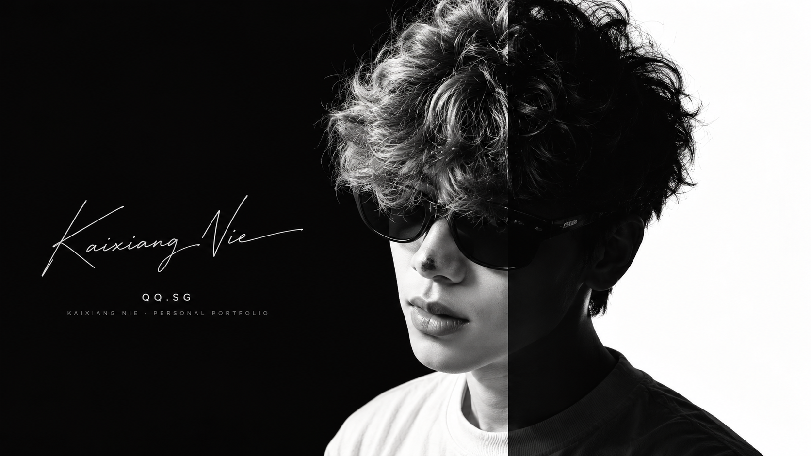

QQ.SG
Kaixiang Nie · Personal Portfolio
QQ.SG
Projects / Infrastructure
Notes / Life / Archive
Notes / Life / Archive
A minimal home for projects, notes, and whatever feels worth keeping.

Scroll
Kaixiang Nie · 2026